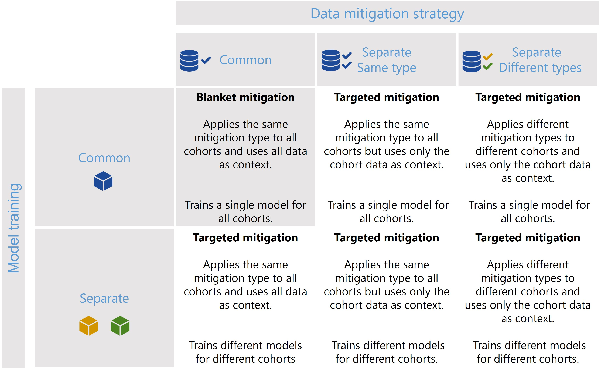
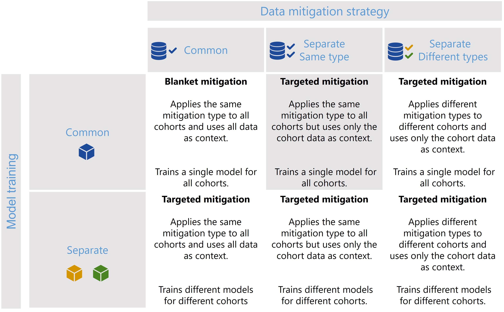
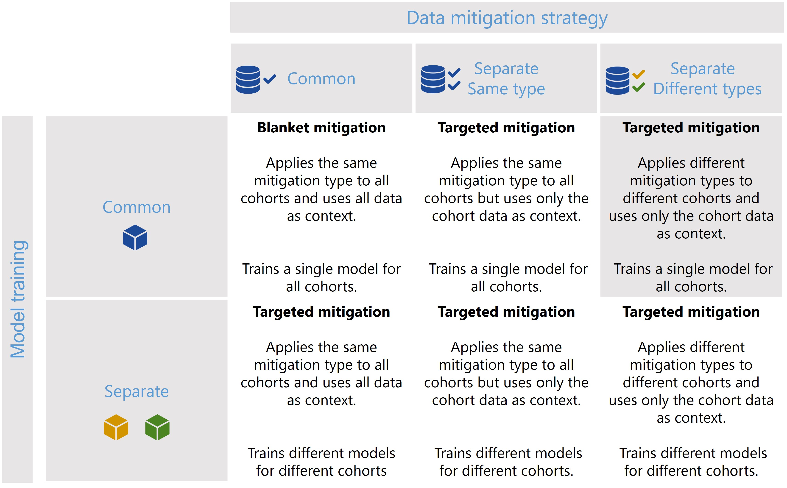
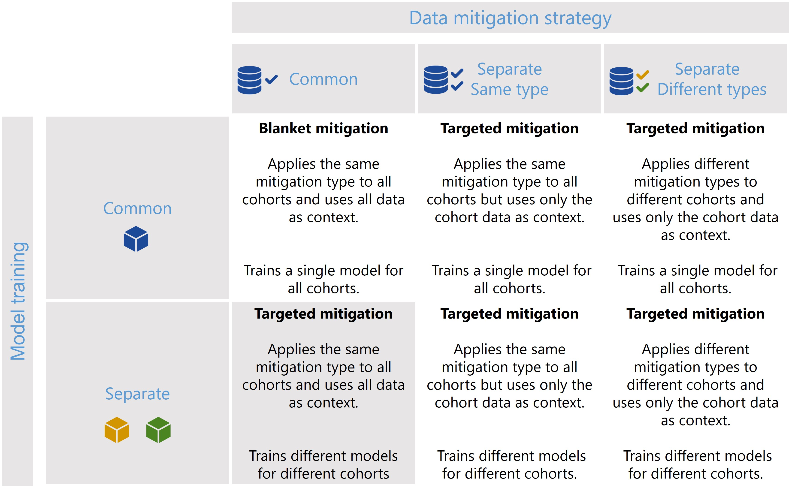
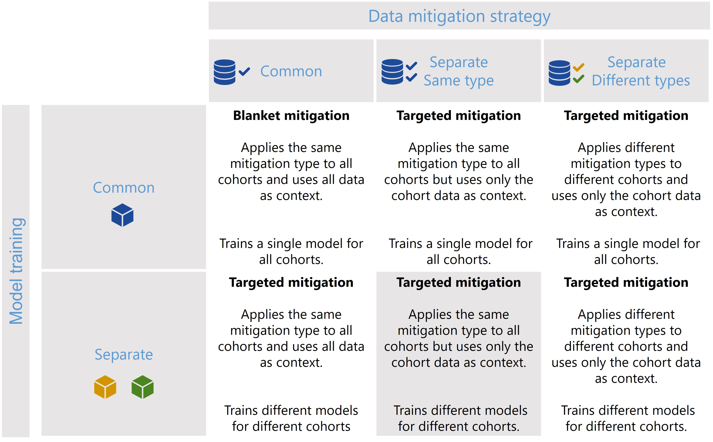
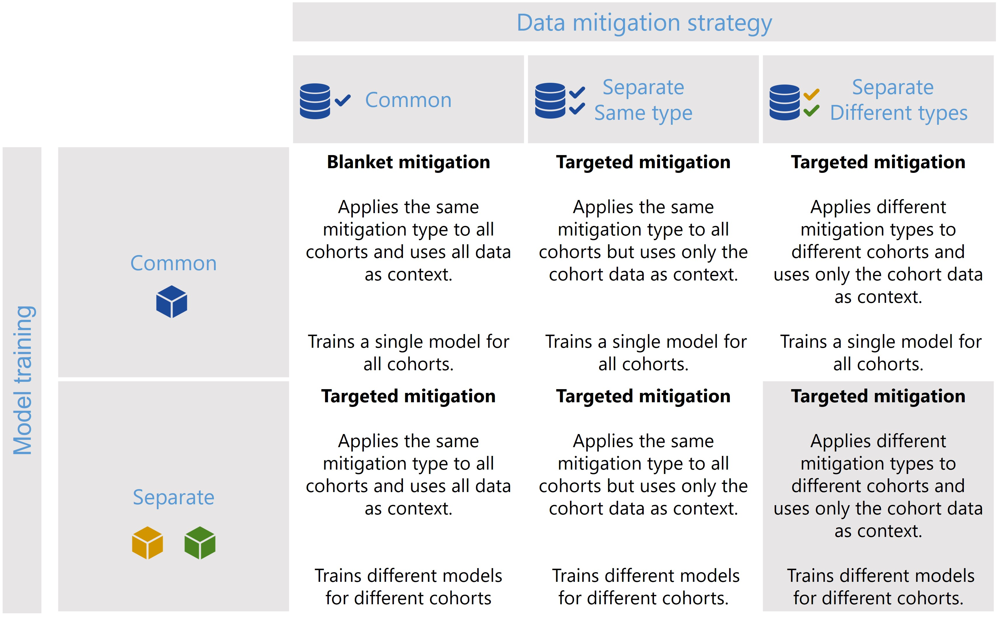

Cohort Manager - Scenarios and Examples
The CohortManager class can be used in different ways to target mitigations to different cohorts. The main differences between these scenarios consist on whether the same or different type of data mitigation is applied to the cohort data, and whether a single or separate models will be trained for different cohorts. Depending on these choices, CohortManager will take care of slicing the data accordingly, applying the specified data mitigation strategy, merging the data back, and retraining
the model(s). These different scenarios are summarized in the image below.

In this notebook, we’ll show a code snippet for each of the scenarios depicted in the image above. For an in-depth tutorial of how to use the CohortManager, please check the Managing Cohorts notebook.
First of all, let’s define some variables and create our dataset.
[25]:
import random
import numpy as np
import pandas as pd
from lightgbm import LGBMClassifier
from sklearn.pipeline import Pipeline
from raimitigations.utils import create_dummy_dataset, split_data
import raimitigations.dataprocessing as dp
from raimitigations.cohort import CohortDefinition, CohortManager
SEED = 42
np.random.seed(SEED)
random.seed(SEED)
[26]:
def create_df(with_null: bool = True):
np.random.seed(SEED)
random.seed(SEED)
def add_nan(vec, pct):
vec = list(vec)
nan_index = random.sample(range(len(vec)), int(pct * len(vec)))
for index in nan_index:
vec[index] = np.nan
return vec
df = create_dummy_dataset(
samples=1000,
n_features=5,
n_num_num=0,
n_cat_num=0,
n_cat_cat=0,
num_num_noise=[0.01, 0.05],
pct_change=[0.05, 0.1],
)
if with_null:
col_with_nan = ["num_0"]
for col in col_with_nan:
if col != "label":
df[col] = add_nan(df[col], 0.1)
return df
# -----------------------------------
def get_model():
model = LGBMClassifier(random_state=SEED)
return model
[27]:
df = create_df()
X_train, X_test, y_train, y_test = split_data(df, label="label")
X_train
[27]:
| num_0 | num_1 | num_2 | num_3 | num_4 | |
|---|---|---|---|---|---|
| 131 | 2.945188 | -2.967287 | 2.337389 | 1.799443 | 1.135685 |
| 333 | 2.974430 | 3.537706 | 1.987065 | -1.861848 | 0.262459 |
| 211 | 1.353304 | -3.212935 | 1.034578 | 1.797846 | 1.682174 |
| 850 | 1.205781 | 2.802149 | 4.308715 | -1.498583 | 2.202188 |
| 514 | 1.659687 | -2.176888 | 2.090389 | 1.608092 | 1.805161 |
| ... | ... | ... | ... | ... | ... |
| 95 | NaN | 3.770849 | 1.538188 | -3.086773 | -0.145386 |
| 317 | 2.553215 | 3.059551 | 2.469591 | -2.561048 | 2.554759 |
| 481 | 1.915074 | -2.785880 | 2.879047 | -0.472673 | 5.318281 |
| 140 | 2.302969 | 3.789408 | 0.752376 | -2.758305 | 1.449600 |
| 291 | -0.034102 | -0.700874 | 0.013272 | 2.687944 | 4.080553 |
800 rows × 5 columns
Scenario 1

[28]:
pipe = Pipeline([
("imputer", dp.BasicImputer(verbose=False)),
("encoder", dp.DataMinMaxScaler(verbose=False)),
("model", get_model())
])
pipe.fit(X_train, y_train)
predictions = pipe.predict_proba(X_test)
print(predictions[0:5])
[[9.14049554e-06 9.99990860e-01]
[8.96087282e-06 9.99991039e-01]
[1.27023722e-05 9.99987298e-01]
[9.14322593e-06 9.99990857e-01]
[9.99966776e-01 3.32243731e-05]]
Scenario 2

[29]:
# Define the pipeline to be used for each cohort
cohort_pipeline = [
dp.BasicImputer(verbose=False),
dp.DataMinMaxScaler(verbose=False),
]
# Define the cohorts
c1 = [ ['num_0', '==', np.nan], 'or', ['num_0', '>', 1.7] ]
c2 = None
# Create the cohort manager
cohort_set = CohortManager(
transform_pipe=cohort_pipeline,
cohort_def=[c1, c2]
)
# Create a pipeline that uses the cohort manager
pipe = Pipeline([
("cohort_preprocess", cohort_set),
("model", get_model())
])
pipe.fit(X_train, y_train)
predictions = pipe.predict_proba(X_test)
print(predictions[0:5])
[[8.22907996e-05 9.99917709e-01]
[8.99293079e-06 9.99991007e-01]
[4.20003325e-05 9.99958000e-01]
[9.14326620e-06 9.99990857e-01]
[9.99967810e-01 3.21900476e-05]]
Scenario 3

[30]:
# Define the cohorts
c1 = [ ['num_0', '==', np.nan], 'or', ['num_0', '>', 1.7] ]
c2 = None
# Create each cohort's pipeline
c1_pipe = [dp.BasicImputer(verbose=False)]
c2_pipe = [dp.DataMinMaxScaler(verbose=False)]
# Create the cohort manager
cohort_set = CohortManager(
transform_pipe=[c1_pipe, c2_pipe],
cohort_def={"high_num_0":c1, "low_num_0":c2}
)
# Create a pipeline that uses the cohort manager
pipe = Pipeline([
("cohort_preprocess", cohort_set),
("model", get_model())
])
pipe.fit(X_train, y_train)
predictions = pipe.predict_proba(X_test)
print(predictions[0:5])
[[9.14325263e-06 9.99990857e-01]
[9.12541931e-06 9.99990875e-01]
[3.26334434e-04 9.99673666e-01]
[9.14325446e-06 9.99990857e-01]
[9.99966824e-01 3.31763322e-05]]
Scenario 4

[35]:
# Define the cohorts
c1 = [ ['num_0', '>', 0.5] ]
c2 = None
# Create the cohort manager
cohort_set = CohortManager(
transform_pipe=[get_model()],
cohort_def={"high_num_0":c1, "low_num_0":c2}
)
# Create a pipeline that uses the cohort manager
pipe = Pipeline([
("imputer", dp.BasicImputer(verbose=False)),
("encoder", dp.DataMinMaxScaler(verbose=False)),
("model_cohort", cohort_set)
])
pipe.fit(X_train, y_train)
predictions = pipe.predict_proba(X_test)
print(predictions[0:5])
[[1.38884203e-05 9.99986112e-01]
[7.43531292e-06 9.99992565e-01]
[2.95033437e-05 9.99970497e-01]
[7.64702060e-06 9.99992353e-01]
[9.99960620e-01 3.93798545e-05]]
Scenario 5

[44]:
# Define the pipeline to be used for each cohort
cohort_pipeline = [
dp.BasicImputer(verbose=False),
dp.DataMinMaxScaler(verbose=False),
get_model()
]
# Define the cohorts
c1 = [ ['num_0', '==', np.nan], 'or', ['num_0', '>', 1.7] ]
c2 = None
# Create the cohort manager
cohort_set = CohortManager(
transform_pipe=cohort_pipeline,
cohort_def=[c1, c2]
)
# Fit and predict using the CohortManager
cohort_set.fit(X_train, y_train)
predictions = cohort_set.predict_proba(X_test)
print(f"{predictions[0:5]}\n")
[[8.18261911e-06 9.99991817e-01]
[1.27965618e-05 9.99987203e-01]
[1.10660836e-05 9.99988934e-01]
[8.10620716e-06 9.99991894e-01]
[9.99964873e-01 3.51269116e-05]]
['cohort_0', 'cohort_1']
cohort_0 pred shape: (134, 2)
cohort_1 pred shape: (66, 2)
Since this time we’re using the CohortManager directly, we can choose to split the predictions
[ ]:
predictions = cohort_set.predict_proba(X_test, split_pred=True)
print(f"{list(predictions.keys())}")
print(f"cohort_0 pred shape: {predictions['cohort_0'].shape}")
print(f"cohort_1 pred shape: {predictions['cohort_1'].shape}")
Scenario 6

[45]:
# Define the cohorts
c1 = [ ['num_0', '==', np.nan], 'or', ['num_0', '>', 1.7] ]
c2 = None
# Create each cohort's pipeline
c1_pipe = [dp.BasicImputer(verbose=False), get_model()]
c2_pipe = [dp.DataMinMaxScaler(verbose=False), get_model()]
# Create the cohort manager
cohort_set = CohortManager(
transform_pipe=[c1_pipe, c2_pipe],
cohort_def={"high_num_0":c1, "low_num_0":c2}
)
# Fit and predict using the CohortManager
cohort_set.fit(X_train, y_train)
predictions = cohort_set.predict_proba(X_test)
print(f"{predictions[0:5]}\n")
[[1.05048860e-05 9.99989495e-01]
[8.01234692e-06 9.99991988e-01]
[1.10660836e-05 9.99988934e-01]
[8.10747765e-06 9.99991893e-01]
[9.99957260e-01 4.27396398e-05]]
Once again, since we’re using the predict() method of the CohortManager, we can split the predictions, which results in a dictionary with the predictions for each cohort.
[46]:
predictions = cohort_set.predict_proba(X_test, split_pred=True)
print(f"{list(predictions.keys())}")
print(f"high_num_0 pred shape: {predictions['high_num_0'].shape}")
print(f"low_num_0 pred shape: {predictions['low_num_0'].shape}")
['high_num_0', 'low_num_0']
high_num_0 pred shape: (134, 2)
low_num_0 pred shape: (66, 2)